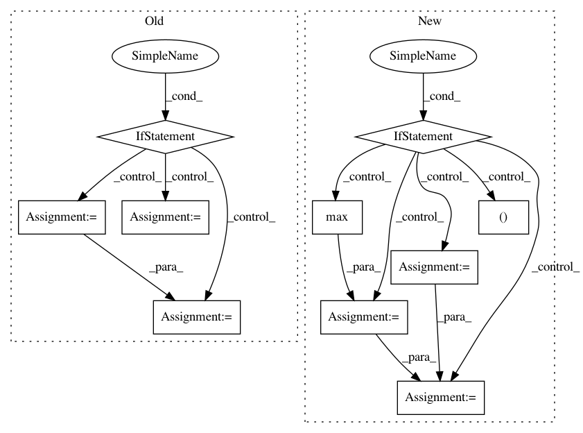

faf3aa876462323f2fa721ebd633752d6489808f,sru/modules.py,SRU,forward,#SRU#Any#Any#Any#,536
Before Change
// unpack packed, if input is packed. packing and then unpacking will be slower than not
// packing at all, but makes SRU usage compatible with nn.RNN usage
orig_input = input
if isinstance(orig_input, PackedSequence):
input, batch_sizes, sorted_indices, unsorted_indices = input
length = input.size(0)
batch_size = input.size(1)
mask_pad = torch.arange(batch_size,
device=batch_sizes.device).expand(length, batch_size)
mask_pad = (mask_pad >= batch_sizes.view(length, 1)).contiguous()
else:
length = input.size(0)
batch_size = input.size(1)
batch_sizes = None
sorted_indices = None
unsorted_indices = None
// The dimensions of `input` should be: `(sequence_length, batch_size, input_size)`.
if input.dim() != 3:
raise ValueError("There must be 3 dimensions for (length, batch_size, input_size)")
if c0 is None:
After Change
// unpack packed, if input is packed. packing and then unpacking will be slower than not
// packing at all, but makes SRU usage compatible with nn.RNN usage
orig_input = input
if isinstance(orig_input, PackedSequence):
input, lengths = nn.utils.rnn.pad_packed_sequence(input)
max_length = lengths.max().item()
mask_pad = torch.ByteTensor([[0] * l + [1] * (max_length - l) for l in lengths.tolist()])
mask_pad = mask_pad.to(input.device).transpose(0, 1).contiguous()
// The dimensions of `input` should be: `(sequence_length, batch_size, input_size)`.
if input.dim() != 3:
raise ValueError("There must be 3 dimensions for (length, batch_size, input_size)")
if c0 is None:
In pattern: SUPERPATTERN
Frequency: 3
Non-data size: 10
Instances
Project Name: asappresearch/sru
Commit Name: faf3aa876462323f2fa721ebd633752d6489808f
Time: 2020-09-18
Author: taolei@csail.mit.edu
File Name: sru/modules.py
Class Name: SRU
Method Name: forward
Project Name: chainer/chainercv
Commit Name: a7706fbde22887909db42f96a696437c084c05db
Time: 2017-05-31
Author: Hakuyume@users.noreply.github.com
File Name: chainercv/evaluations/eval_detection_voc.py
Class Name:
Method Name: eval_detection_voc
Project Name: chainer/chainercv
Commit Name: 90b78b1379b3423aa3b4b5d0de7313f88bda23ab
Time: 2019-02-17
Author: yuyuniitani@gmail.com
File Name: chainercv/utils/mask/mask_to_bbox.py
Class Name:
Method Name: mask_to_bbox